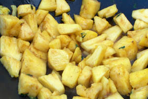

Ananas met cointreau
Ingrediënten (voor 4 personen)
- 1 verse rijpe ananas
- 3 el cointreau
- kaneel
- rietsuiker
- olie
- paar blaadjes munt
Bereiding
- Snij de ananas in brokjes.
- Doe de olie in een koekenpan en laat daar de ananas in stoven op een zacht vuur.
- Voeg kaneel en rietsuiker toe.
- Giet de cointreau erover.
- Snij de muntblaadjes in stukjes en strooi ze over de ananas.
- Serveer eventueel met een bol vanille-ijs.